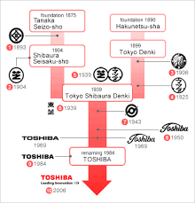

TOSHIBA
Toshiba, es una compañía japonesa, con sede en Tokio, dedicada a la manufactura de aparatos
eléctricos y electrónicos. Ocupa el séptimo puesto en la lista de grandes compañías mundiales
de su campo.
En la actualidad Toshiba ocupa el quinto puesto a nivel mundial en ventas de ordenadores
portátiles, con el 5.2 % de las ventas mundiales.
Entre sus competidores de equipos de gama alta tiene a la marca americana Apple, la marca china
Lenovo, las marcas americanas Dell seguido por HP, y entre otras marcas en el mercado mundial.
Durante el año comercial 2000-2001 la empresa facturó 5.951.357 millones de yenes y obtuvo un
beneficio neto de 96 168 000 000 de yenes. Trabajan para Toshiba 210 000 empleados aproximadamente,
según datos de 2013.
Historia

En 1876 Hisashige Tanaka inició un negocio de fabricación de partes para telégrafos con el nombre de
Tanaka Seizo-sho. Por otro lado, en 1890 es fundada la empresa Hakunetsu-sha, pionera en el ramo de
lámparas eléctricas en Japón y en 1890 cambia su nombre a Tokio Denki. En 1904, la compañía del señor
Tanaka, rebautizada como Shibaura Seisaku-sho, era líder en la fabricación de aparatos eléctricos.
Finalmente en 1939 ambas empresas se unen para formar Tokio Shibaura Denki (Compañía eléctrica de Tokio)
pero la gente pronto comenzó a llamarla To-Shiba, hasta que en 1978 adoptó el nombre Toshiba formalmente.
El grupo se expandió con fuerza, tanto por el crecimiento interno como por adquisiciones, absorbiendo
compañías de ingeniería e industria primaria en los años 1940 y 1950, dando lugar a empresas subsidiarias
a partir de los 1970s como Toshiba EMI (1960), Toshiba Electrical Equipment (1974), Toshiba Chemical (1974),
Toshiba Lighting and Technology (1989) y Toshiba Carrier Corporation (1999).
La empresa en el año 1957 al 1962 vendió 50 coches eléctricos para los ferrocarriles Mitre y Sarmiento de
Argentina para reemplazar la vieja flota de coches de origen inglés. La empresa fue responsable de algunas
primicias japonesas, como el rádar (1942), la TAC (1954), televisor de transistores y horno microondas (1959),
videófono en color (1971), el vocablo en japonés procesador (1978), el sistema MRI (1982), computadora portátil
(1982), siendo esta, primera que la Osboune (Epson HX-20) y la primera del mundo en ser comercializada, es el
inventor de la memoria flash NAND, conocida como EEPROM en sus orígenes (1991), DVD (1995), y el Libretto (1996).